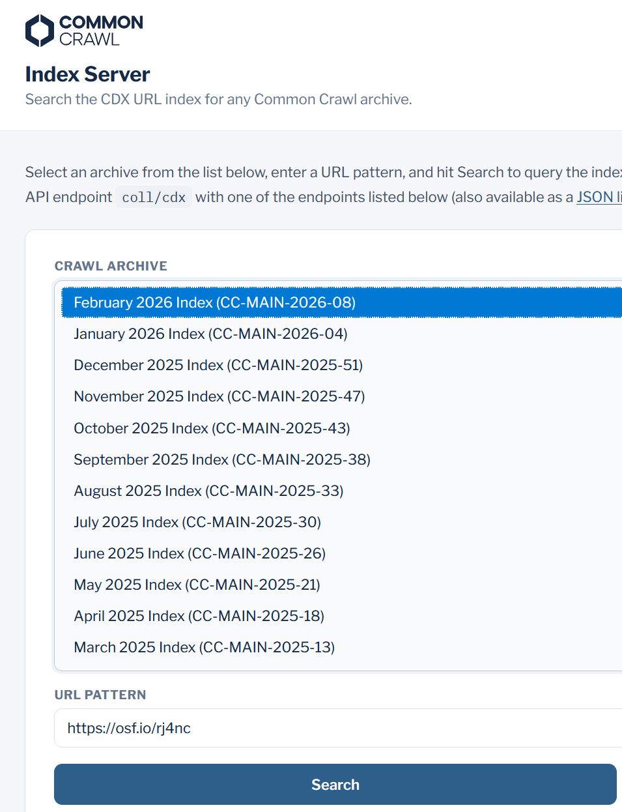
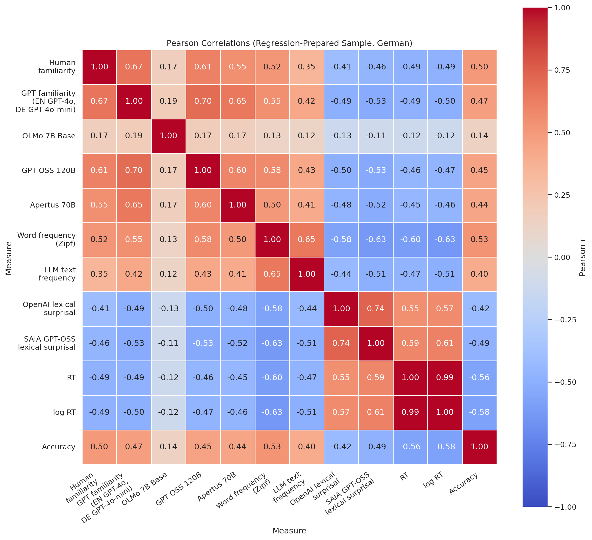
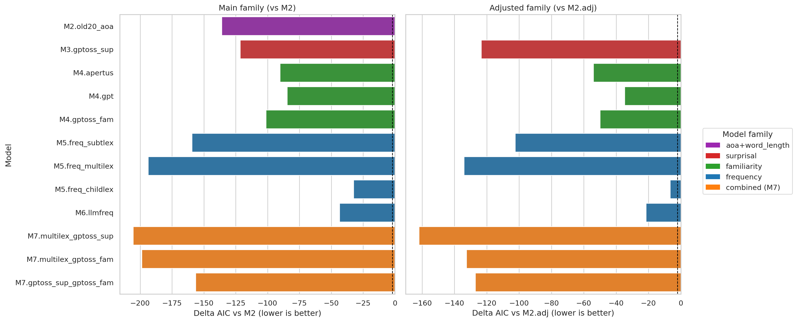
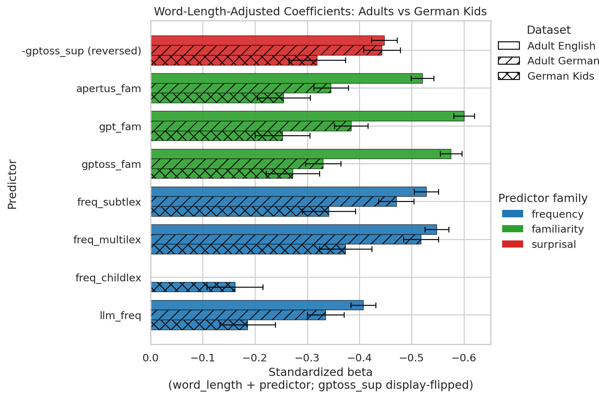

Do large language model familiarity estimates predict human lexical processing?
A cross-language, cross-model study in English and German
![]()
Research Question
Recent research suggests that LLM-generated word familiarity ratings outperform traditional frequency measures in predicting adult lexical decision times (Brysbaert et al., 2024, Conde et al., 2026)
- Check leakage risk for existing human familiarity norms.
- Can LLM-derived familiarity estimates explain human lexical processing across:
- English adults, German adults, German kids RTs?
- Different model families and measurement methods (open weight models, surprisal, logprobs, chat ratings)?
Step 1: Leakage
- Common crawl is a typical training data source
- Common crawl is hosted on AWS, so AWS queries were used to scan for Glasgow-related URLs and identifiers
- Found exact osf page and article-page URLs of existing human familiarity norms (after searching about 300GB of content), but not the actual data (so far).
- Searching common crawl is not trivial. Few LLMs use transparent document filtering pipelines.

Study Design
Existing data
| Dataset | Language | Source | N words (approx.) | |
|---|---|---|---|---|
| Glasgow Norms (human familiarity) | English | Scott et al. (2019) | 5,500 | |
| GPT-4o-mini familiarity | English | Brysbaert, Martínez, & Reviriego (2024) | ~5,000 | |
| LDT | English | Mandera et al. (2020) | ~62,000 | |
| human + GPT-4o-mini familiarity | German | Conde et al. (2026) | ~11,000 | |
| Word frequency and LDT | German | Brysbaert et al. (2011) | ~3,000, ~370,000 | |
| LDT | German | Günther et al. (2020) | ~5,000 | |
| LDT | German | Schroeder et al. (2015) | ~1,000 | |
| LLM-based frequency | German, English | Schepens et al. (2025) | ~10,000 |
Regression modeling:
log_rt, with removed outliers|z(log_rt)| <= 3andaccuracy > 70%Baseline:word_lengthBaseline:word_length+child_old20+aoa
Final number of words:
- English adults: NA
- German adults: NA
- German kids: NA
Familiarity and Lexical Surprisal
Familiarity: “How familiar is this word to you?”
human_fam: human familiarity norms (from Brysbaert et al., 2026 for German, Scott et al., 2019 for English)gpt_fam: based on GPT 4o / 4.1 mini using log-prob scoring (Brysbaert et al., 2024, Conde et al., 2026)gptoss_fam: using SAIAapertus_fam: using SAIAolmo_fam: base-model estimate using RAMSES, generated with log-prob scoring
Log-prob scoring: generate log-probabilities for the 1–7 rating scale, then compute the weighted mean.
Example: \(p_2 = .2,\; p_3 = .5,\; p_4 = .2 \;\Rightarrow\; \hat{r} = .2{\times}2 + .5{\times}3 + .2{\times}4 = 2.9\)
\[\hat{r} = \sum_{k=1}^{7} k \cdot p_k\]
Surprisal: Represents the probability / predictability of a word given a fixed prompt.
Example: German abendbrot: tokens [" ab", "end", "brot"], logprobs [-9.1, -6.0, -5.2] -> surprisal 20.4 nats.
- Caveat: summed lexical surprisal is higher for longer / segmented words, so length/tokenization effect.
\[ S(w) = - \sum_{i=1}^{k} \log p(t_i \mid \text{prefix}, t_{<i}) \]
Overview
English

German

Word Frequency: Multilex vs (AI) Familiarity

Non-linear pattern. Familiarity ratings are more compressed near the top. Frequency is more spread out and heavy-tailed.
Processing Speed: RT vs (AI) Familiarity

Different shapes, similar correlations.
Disagreement Examples
Examples of where the measures pull apart in informative ways:
Low human + High AI familiarity
- English, GPT-OSS:
mallHuman3.82, GPT-OSS6.80 - English, OLMo:
edificeHuman1.94, OLMo4.95 - German, GPT-OSS:
kirchhofHuman4.94, GPT-OSS6.50
High AI familiarity + high AI surprisal
- English, GPT-4 familiarity:
vomitGPT-4 fam6.73, surprisal19.00 - English, GPT-OSS familiarity:
ticklishGPT-OSS fam6.00, surprisal20.87 - German, GPT-4 familiarity:
kuhmilchGPT-4 fam7.00, surprisal32.65 - German, GPT-OSS familiarity:
kakaobohneGPT-OSS fam6.00, surprisal36.30
High human + low AI familiarity
- German, GPT-OSS:
wegrandHuman6.41, GPT-OSS1.50
High frequency + high surprisal
- English:
seduceMultilex3.70, surprisal20.10 - English:
grandpaMultilex4.56, surprisal17.06 - German:
sektglasMultilex1.41, surprisal36.99
Adult Model Comparison

- Language and model-specific effects. No clear frequency vs familiarity vs surprisal patterns.
German Kids: Similar Pattern

Not enough human familarity ratings available (<100)
Adults vs Kids

- Predictors remain directionally consistent
- Relative balance between frequency and familiarity differs
- The adult signal seems clearest
Summary and Limitations
- LLM-derived familiarity is not a single construct; different model families behave differently.
- Familiarity signals are very good at predicting lexical decision RT, well beyond basic controls, especially in adults.
- Frequency is also strong, but is distributed less like RTs.
- Familiarity, surprisal, and frequency capture overlapping and non-identical parts of RTs.
Todo’s: - Multilingual logprobs-based familiarity and surprisal using a base model with open training data - Compare effects across more words (not only the human familiarity norms) - Include more German lexical decision data
References
- Brysbaert, M., Martinez, G., & Reviriego, P. (2024). Moving beyond word frequency based on tally counting: AI-generated familiarity estimates of words and phrases are an interesting additional index of language knowledge. Behavior Research Methods, 56, 3180-3199. https://doi.org/10.3758/s13428-024-02561-7
- Brysbaert, M., Mandera, P., McCormick, S. F., & Keuleers, E. (2019). Word prevalence norms for 62,000 English lemmas. Behavior Research Methods, 51, 467-479. https://doi.org/10.3758/s13428-018-1077-9
- Brysbaert, M., & New, B. (2009). Moving beyond Kucera and Francis: A critical evaluation of current word frequency norms and the introduction of a new and improved word frequency measure for American English. Behavior Research Methods, 41(4), 977-990. https://doi.org/10.3758/BRM.41.4.977
- Brysbaert, M., Buchmeier, M., Conrad, M., Jacobs, A. M., Bolte, J., & Bohl, A. (2011). The word frequency effect: A review of recent developments and implications for the choice of frequency estimates in German. Experimental Psychology, 58(5), 412-424. https://doi.org/10.1027/1618-3169/a000123
- Conde, J., Martinez, G., Grandury, M., Arriaga, C., Haro, J., Schroeder, S., Hintz, F., Reviriego, P., & Brysbaert, M. (2026). Updating the German Psycholinguistic Word Toolbox with AI-generated estimates of concreteness, valence, arousal, age of acquisition, and familiarity. Journal of Cognition, 9(1), 9. https://doi.org/10.5334/joc.482
- Guenther, F., Marelli, M., & Boelte, J. (2020). Semantic transparency effects in German compounds: A large dataset and multiple-task investigation. Behavior Research Methods, 52(3), 1208-1224. https://doi.org/10.3758/s13428-019-01311-4
- Mandera, P., Keuleers, E., & Brysbaert, M. (2020). Recognition times for 62 thousand English words: Data from the English Crowdsourcing Project. Behavior Research Methods, 52(2), 741-760. https://doi.org/10.3758/s13428-019-01272-8
- Schepens, J., Woloszyn, H., et al. (2025). Can large language models generate useful linguistic corpora? Open Mind, 9. https://doi.org/10.1162/OPMI.a.30
- Schroeder, S., Wuerzner, K. M., Heister, J., Geyken, A., & Kliegl, R. (2015). childLex: A lexical database of German read by children. Behavior Research Methods, 47(4), 1085-1094. https://doi.org/10.3758/s13428-014-0528-1
- Scott, G. G., Keitel, A., Becirspahic, M., Yao, B., & Sereno, S. C. (2019). The Glasgow Norms: Ratings of 5,500 words on nine scales. Behavior Research Methods, 51, 1258-1270. https://doi.org/10.3758/s13428-018-1099-3
- Team OLMo, Ettinger, A., et al. (2025). OLMo 3 [Preprint]. arXiv. https://arxiv.org/abs/2512.13961
Backup: Methods Notes
analysis_rowsare the final regression sample after RT filtering, outlier exclusion, and listwise requirements for the fit-capable model family.- OLMo-3 was used for logprobs because base-model probabilities are more interpretable than instruction-tuned next-token distributions for rating extraction.
- SAIA supported both chat and completion-style endpoints in our environment; KI:Connect supported chat, but not completion-style scoring.
- Adults diagnostics source:
r adult_result_stamp - Kids diagnostics source:
r kids_result_stamp
Surprisal Panels: GPT-OSS vs AI Familiarity

- surprisal and familiarity are related, but in the opposite direction
Adult Single-Predictor Effects

Adults vs Kids With Extra Controls

- Adding
old20andaoais a harder test. - The core pattern does not disappear.
- familiarity/frequency/surprisal effects are not just proxies for orthographic structure or acquisition age.